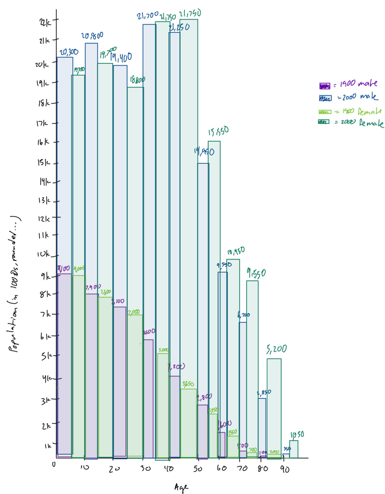
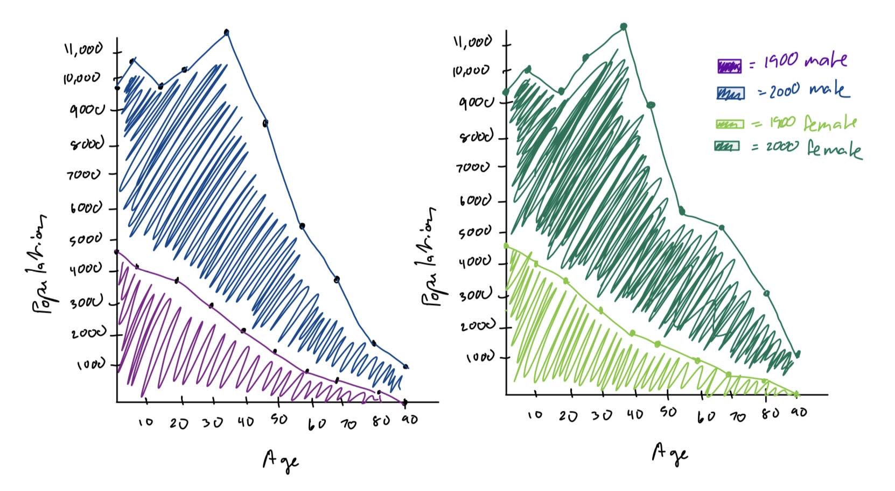

Phase One: Sketching Visualizations
Q: How similar are the trends in population change between males and females, and between different age groups from the year 1900 to the year 2000?
Population Bar Chart Overlay by Age Group and Gender
Design Rationale for Sketch 1:
- This was the first sketch, so I wanted to explore the data to see if there were any initial obvious trends I could see in the numbers itself which led me to making a bar chart.
- Since my question was about trends in population change for both gender and age, I wanted to visualize everything all at once. This made the visualization a bit messier than I would have liked with too many colors, not enough spacing, and too much information all at once. More spacing between bars may have helped.
- I overlaid the bars from 1900 and 2000 hoping to be able to see the population change easier. This part was pretty successful in my opinion. In the age group 0-9, the 1900 bar is roughly half the size of the one from 2000 and checking the numbers, we find that is true. So the population roughly doubled!
- Initially, I did not have the population numbers annotated on top of each bar, but I found that due to the granularity of the chart, it was hard to tell what the actual population change was. Adding the numbers helped with this but made the visualization even busier than it already was.
- In the next sketch, I want to make the visualization less busy by splitting up the x-axis so that it is only one of age or gender.
Side by Side Comparison of Population Growth by Gender
Design Rationale for Sketch 2:
- I liked the overlay from the previous chart and wanted to see if I could make it even easier to see the percentage growth changes. I thought a continuous area would be a lot easier to see changes in than dicrete bars since we as a society are more trained to notice areas of non-regular shapes.
- In the name of making the visualization less busy, I split the data by gender and made the visualization a small multiple. This worked well in isolating analysis by gender, but made cross gender comparisons difficult. I think something more side by side like with the bar charts may have helped with comparison across the genders.
- I don't think the individual points were as helpful as I thought they would be. They are helpful for making quick vertical comparisons easy, but aren't completely necessary since we have tick marks on the x-axis anyway.
- Next chart, I want to explore a visualization that tells me more about the ages of the population and maybe how the age relates to gender. So far, the visualizations have all had the age as the dimension, so not much new info has been obtained for the ages yet.
Median, Range, and IQR of Ages in Population by Gender

Design Rationale for Sketch 3:
- I wanted to learn more about the ages of the populations, specifically if the median age changed from 1900 to 2000.Box plots are good at showing key aspects of a data distribution such as range, median, and how the data is split up.
- I wanted this visualization to show me how age relates to gender and population and I think this visualization succeeeded in its goal. We can clearly see that there were more older females than males in 2000 and that the range of ages for the female population increased more than the range of ages for the male population.
- While good at summarizing the data, the box plot ends up losing a lot of information about specific age groups from the data. We only know where the data is split into 25% intervals, but we do not know anything about the age groups in those 25% intervals.
- A future iteration might overlay some kind of scatter plot or marker size to denote individual age groups better. However, that may make the sketch more busy and thus take away from the appeal of box plots neatly summarizing our numberical data.
Reflection
I think sketch 2 (the area charts) is the best sketch here. It either directly displays the same information as the other sketches or allows the viewer to calculate/estimate the same information as the other sketches. There's also not as much information overload as sketch 1 since viewers can look at one graph at a time. Additionally, it provides more granular information than sketch 3 about the population of each age group. One thing I would improve on in sketch 2 is how difficult it is to compare across genders. I like the symmetry of the 1900 male and female bar charts on the bottom of sketch 1, so maybe somthing that is symmetrical and side by side would also work well for sketch 2, especially since the data is so similar to each other. Overall, in the next phase, I will try to iterate on sketch 2 and find ways to make it easier for the viewer to calculate/estimate the information obtained from the other sketches that is not already displayed in sketch 2. For example, maybe I can map the respective points on the female and male area charts to simulate the side by side male and female bar charts in sketch 1.
Phase Two: Final Design
Design Process & Design Decisions
My final visualization started off as a small multiple of 2 area chart visualizations split by gender as seen in sketch 2. The reasons I chose to use area charts is documented in phase one. However, in my final visualization, I chose to flip the x-axis of the female population area chart so that I could place the female and male area charts side by side. This made a symmetrical shape that instinctively encourages viewers to search for imperfections or asymmetrical points which are precisely the age groups where population change differed for each gender. To further encourage viewers to compare respective points across the genders, I added thin grey lines connecting points that showed asymmetry in 2000 but symmetry in 1900, encourging viewers to notice the difference in population growth by gender for the same age groups. The x- and y-axis tick marks provide enough granularity to get a sense of the data and perform calculations if wanted. Additionally, I intentionally chose to use the same color scheme of green, purple, and maroon throughout all my sketches to move away from the standard blue is male and pink is female connotations.
The final question that I wanted to answer with my final visualization was "How similar was the change in population for males and females from the year 1900 to the year 2000 based on age groups?" I came up with this question after looking at all the sketches I drew for phase one and seeing what types of questions I could reliably answer without overloading information into the visualization. Because the goal was to compare population change across the genders, the grey lines really added to drawing the viewer's attention to the graph as whole rather than to the individual color blocks. The color blocks may be a bit distracting since they contrast so heavily against each other, but I felt that it was a good way to denote the different groups of population we are trying to analyze. Another way of separating the groups of population and encouraging comparison of age groups and genders was the blue line plot that outlines the area charts. This made it more obvious where the overlay of the areas started and ended, making it easier to compare the actual areas at a glace. Being able to compare the areas easily meant viewers could easily see the growth of population from 1900 to 2000. overall, at a glance, viewers should be able to notice that overall population more than doubled from 1900 to 2000 and that the female population in 2000 was older on average and had larger population growth from 1900 on average than the male population in 2000.
Reflection
Phase One helped me decide which overall visualization type I wanted for the final design and also helped me narrow down my initial question. The sketches helped me understand that I could not look at all the possible combinations of age, gender, and population size in a single sketch without having information overload. They also helped me understand which relations between the values made the most sense. For example, although there was interesting information learned from the box plot sketch, I couldn't learn much about the overall population growth. On the other hand, with the area sketch, we can also learn about median age by looking checking for the x-value with around half the area. My final design ended up being an iterative development of sketch 2. If I had not done an initial sketch, the small multiple version of the area charts likely would have been my final design, but because I was in the mindset of iterative development, I was able to closely examine the strengths and weaknesses of the area chart and my final design as I was building it to come up with Figure 4 above. I spent a lot more time improving my final design based on the weaknesses I noticed during my phase one sketch than I did actually coming up with the initial final design draft. Creating multiple sketches by hand also helped me engage the creative side of my mind that allowed me to come up with a design that Tableau does not have as its basic/commonly used visualizations.